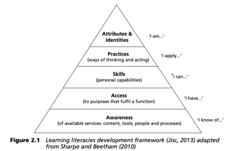

Our Mission

The charitable mission would be training in information and communication technologies for vulnerable communities.
Digital Literacy
The ability to understand and use information in multiple formats from a wide range of sources when it is presented digital. The concept of literacy goes beyond simply being able to read; it has always meant the ability to read with meaning, and to understand. It is the fundamental act of cognition (Katharine Reedy, & Jo Parker. (2018)).
Parents and children must have the ability not only to access but to interact with technology in a critical way.
Technology Appropriation

Link people and develop a culture or cultural behaviors that facilitate the adoption of technologies, not only access but also the use and utilization of them.
Community

Parents and children must to work together to improve the technologies skills, .